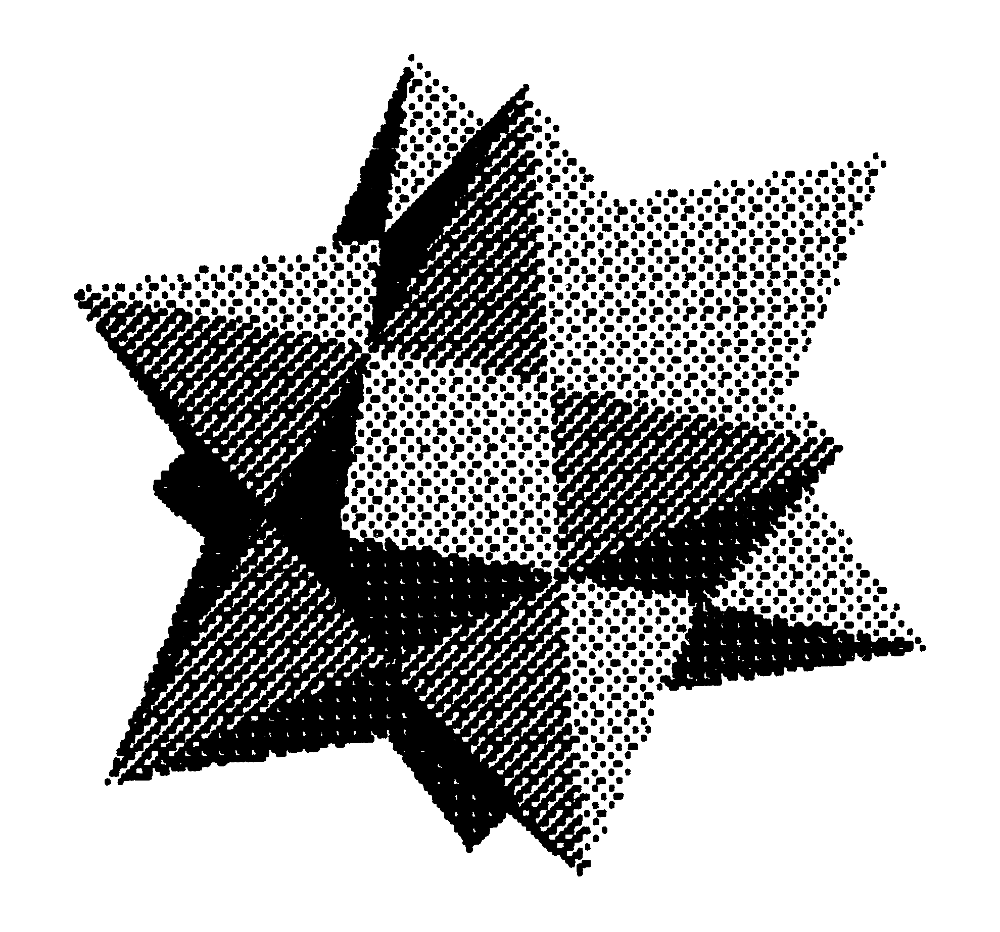
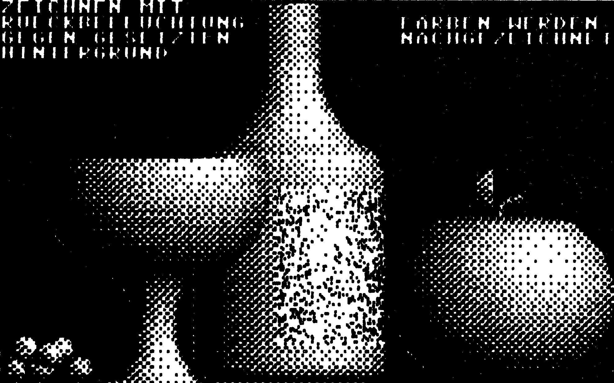
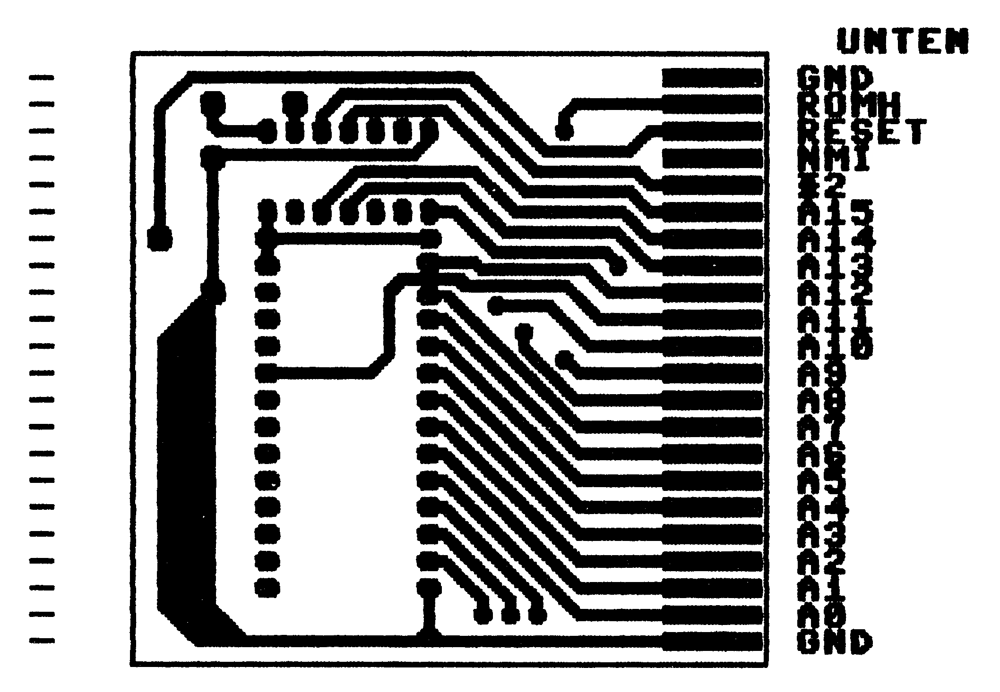

Super-Hardcopies für Epson-Drucker und Kompatible
Eröffnen Sie sich ganz neue Wege, Grafiken zu Papier zu bringen. Unterschiedliche Größen und unterschiedliche Punktdichten ermöglichen erstmals, extrem kontrastreiche Grafiken zu erzeugen.
Super-Print ist eine universelle Hardcopyroutine für Hi-Res-Grafiken. Sie ist geschrieben für Epson-Drucker und Kompatible sowie alle grafikfähigen Drucker, die sich über ESC-Sequenzen (CHR$(27)) ansteuern lassen. (Listing 1).
Sie unterstützt alle Grafik-Optionen und bietet darüber hinaus noch vier softwaremäßig erzeugte Dichten sowie Ausgabeformate mit sehr hoher Punktdichte (Bild 1, 2). In der Hardcopy ist keine eigene Centronics-Software integriert, sie muß, falls kein Interface vorhanden ist, vorgeladen werden.


Das Menü
1) bis 6) Druckerparameter
Die Auswahl der Druckerparameter erfolgt mit den Zahlentasten (1) bis (6) oder den Tasten Cursor auf/ab. Mit den Tasten Cursor rechts/links können die Parameter verändert werden. Zu den Druckereinstellungen aber später.
P) Print
Mit der (P)-Taste wird der Ausdruck gestartet. Das Drucken kann jederzeit durch Drücken einer beliebigen Taste unterbrochen werden. Der Drucker wird am Anfangund Ende des Druckvorgangs neu initialisiert.
L) Load
Mit (L) kommt man ins Lademenü. Gibt man nur (RETURN) ein, kommt man wieder ins Hauptmenü. Wird ein ($) als Filename eingegeben, so wird das Inhaltsverzeichnis der Diskette gelistet. Nach ($) können die üblichen Spezifikationen folgen (zum Beispiel $:Nam*). Gibt man nun einen Filenamen ein, gefolgt von (RETURN), so erscheint die Frage »Colorram too? (Y/N)«.
Antwortet man nun mit (N), so wird das File direkt in den Bildspeicher geladen.
Mit (Y) liegt die Ladeadresse $400 Byte tiefer, so daß Files, die zusammen mit dem Farb-RAM gespeichert wurden, ebenfalls korrekt geladen werden.
Achtung!! Super-Print lädt alle Programm-Files, also auch Basic-Programme in den Grafik-Speicher. Dann ist natürlich in der Regel nur Bit-Müll auf dem Bildschirm zu sehen.
E) Grafik ein
Durch Drücken der (E)-Taste wird die Grafik eingeschaltet. Anschließend kann mit ® die Grafik invertiert werden. Sie wird dann auch revers gedruckt.
X) Exit
Mit (X) gelangt man ins Basic zurück. Startet man das Programm wieder mit RUN, so wird dabei der Grafikspeicher neu initialisiert. Eine eventuell vorhandene Grafik wird also gelöscht und muß neu geladen werden.
Die Druck-Modi
Super-Print bietet eine Vielzahl von Druckmöglichkeiten, so daß der Umgang am Anfang ein wenig Übung bedarf. Zunächst aber die grundsätzlichen Möglichkeiten, der Schwierigkeit nach geordnet:
6) Sec. Adress
Die Grafik wird generell im Direktmodus zum Drucker geschickt. Da die verschiedenen Interfaces für den Direktmodus unterschiedliche Sekundäradressen benutzen, lassen sich diese Sekundäradressen zwischen 0 und 80 frei einstellen. Bei den meisten Interfacesist eine »1« einzusetzen.
5) Linefeed
Es wird bestimmt, ob Super-Print nach dem CR (Carriage Return = Wagenrücklauf) am Zeilenende auch noch einen Line-Feed (Zeilenvorschub) senden soll.
4) Left Margin
Hier kann der Abstand vom linken Rand angewählt werden. Der eingestellte Rand bleibt auch erhalten, wenn die Grafik über den rechten Blattrand hinausgeht. Der Drucker verschluckt dann den Rest der Zeile, druckt aber trotzdem die Zeilen richtig untereinander, so daß der druckbare Teil des Bildes richtig ausgegeben wird.
1) Size
Es gibt vier verschiedene Ausgabeformate:
Large, Normal, Small und Micro.
In den Modi »Normal« und »Large« beträgt der senkrechte Punktabstand %2 Zoll, also normaler Nadelabstand.
Normal: In der Größe »Normal« beträgt damit die Bildhöhe etwa 7 cm. Ein Bildpunkt im Druckbild entspricht dabei einem Punkt auf dem Bildschirm.
Large: Im »Large«-Format wird das Bild doppelt so groß ausgegeben, also einem Bildschirmpunkt entsprechen vier Punkte auf dem Papier mit normaler Dichte. Die Grafik wird dabei um 90 Grad gedreht.
Small: In der Größe »Small« wird der senkrechte Punktabstand auf % der normalen Höhe reduziert, also %i6 Zoll. Die Höhe eines Bildschirmausdruckes beträgt dann noch zirka 4,5 cm. In diesem Modus überlappen sich die Bildpunkte im Ausdruck schon ein wenig, es entstehen auch bei normaler Dichte vollschwarze Flächen.
Micro: In der Größe »Micro« wird der senkrechte Punkteabstand weiter reduziert auf 1/216 Zoll. Ein kompletter Bildschirmausdruck ist jetzt noch zirka 2,5 cm hoch. In dieser Auflösung verlaufen die Einzelpunkte zu glatten Konturen. Dieser Modus ist ideal für kleine Embleme etc. in Foto-Qualität.
2) Density
Es stehen drei Dichten zur Verfügung.
Single: druckt das Bild in einfacher Dichte aus.
Double: gibt jeden Punkt zweimal aus, und zwar so, daß zwischen dem ersten und zweiten Mal ein kleiner Versatz entsteht. In den Größen »Large« und »Normal« ist dieser Versatz 1/216 senkrecht, in den Größen »Small« und »Micro« beträgt er 1/270 Zoll waagerecht.
Quadruple steht nur in den Größen Normal und Large zur Verfügung. Hier wird jeder Punkt viermal ausgegeben, und zwar zweimal eng nebeneinander und zweimal eng untereinander. In »Quadruple«-Density werden durchgehende Flächen vollschwarz wiedergegeben, es sind keine Lücken mehr zwischen den Bildpunkten vorhanden.
3) Image Mode
Durch die Option »Size« wird die Höhe der Grafik ausgewählt. Dabei wird aber eine Grafik in »Micro« ebenso breit ausgegeben wie eine in »Normal«, das heißt sie wird sehr breit im Verhältnis zur Höhe. Um diesen Effekt auszugleichen, kann man mit dem Image Mode die Punktdichte des Druckers verändern. Es wird die Punktdichte in »Punkte pro Zeile« angegeben, dahinter in Klammern ein Stichwort.
Die Image Modes werden über die Druckeroption »ESC"*"…« an den Drucker gesendet. Dabei stehen sieben Image Modes zur Verfügung:
0) Standard Dichte, 480 Punkte/Zeile
1) Doppelte Dichte, 960 Punkte/Zeile
2) Doppelte Dichte, Doppelte Geschwindigkeit, 960 Punkte/Zeile
3) Dreifache Dichte, 1920 Punkte/Zeile
4) 640 Punkte/Zeile
5) Plotter-Modus, 576 Punkte/Zeile
6) 720 Punkte/Zeile
Falls es sich nicht um einen Epson-Drucker oder Kompatiblen handelt, können die Modi auch etwas anders belegt sein. Um Hardcopies im Bildschirmformat zu erhalten, seien folgende Kombinationen angeraten:
| Size | Image Mode |
|---|---|
| Micro | und Quadruple |
| Small | und Double/Normal Speed |
| Normal | und Plotter |
| Large | und Plotter |
Alle anderen Kombinationen sind natürlich auch möglich. Besondere Aufmerksamkeit erfordert auch der »Plotter«-Mode. Werden Grafiken in den Größen Large und Normal mit dem Image Mode »Plotter« ausgegeben, so ist der Punktabstand senkrecht und waagerecht exakt gleich (Bild 3). Dies ist besonders für den Ausdruck von Platinenvorlagen wichtig.

Es sei noch darauf hingewiesen, daß in den Image Modes »Quadruple« und »double Density/double Speed« von zwei direkt nebeneinanderliegenden Punkten nur der linke gedruckt werden kann.
Tips und Tricks
Lademenü
$ beziehungsweise $0:NAME als Filename ruft die Catalog-Funktion auf. Eingabe des Filenamen lädt ein File in den Grafik-Speicher (unabhängig von Anfangsadresse). Akzeptiert auch Grafik-Files mit vorangestelltem Color-RAM (Abfrage).
Speichern der Änderungen
Super-Print mit RUN starten und gewünschte Parameter einstellen. Anschließend mit X ins Basic zurück und wie ein normales Basic-File mit SAVE »NAME« speichern. Super-Print setzt alle Basic-Pointer so, daß der SAVE-Befehl das Programm vollständig auf die Diskette zurückschreibt.
Grafik-Speicher nicht löschen
Normalerweise wird beim Einsprung in Super-Print der Grafik-Speicher gelöscht. Ist dies nicht erwünscht, folgende Änderung durchführen: Vom Basic aus mit LIST den Programmanfang auflisten,
1986 sys 2064+0
statt der 0 nun eine 3 einfügen, also
1986 sys 2064+3
Nun bleibt der Grafik-Speicher auch beim Neustart erhalten. Natürlich kann diese Änderung mitgespeichert werden.
Druckeranpassung
Nach dem Programmstart meldet sich die »Druckeranpassung« (Listing 2) mit der Aufforderung, eine beschreibbare Diskette mit »Super-Print« einzulegen. Es müssen noch mindestens 13 Blocks auf dieser Diskette frei sein.
Zunächst wird nun die Diskette zum Schreiben vorbereitet. Es werden die aktuellen Parameter von Super-Print ausgelesen. Nun wird die Steuersequenztabelle ausgegeben. Dabei erscheint revers der zugehörige Name der Steuersequenz, entsprechend dem Super-Print-Menü.
Anschließend wird der Escape-Code, in der Regel 27 ausgegeben, dann die Steuercodes, zum Beispiel 42 und 0. Falls nur zwei Byte Steuercode benötigt werden, zum Beispiel ESC + K, muß der dritte den Wert 255 erhalten.
Falls der Drucker einige Auflösungen nicht kennt, sollte jeweils die nächstliegende Punktdichte eingestellt werden. Nach den sieben Grafikmodi wird noch »Höchste mögliche Dichte« abgefragt. Hier muß eine der vorher eingegebenen Sequenzen mit hoher Punktdichte noch einmal eingegeben werden, also Quadruple oder, falls nicht vorhanden (zum Beispiel RX80), Double. Es soll auf jeden Fall die höchste Punktdichte eingestellt werden, die der Drucker beherrscht.
Im Anschluß folgt die Steuersequenz, die vor und nach jedem Druckvorgang den Drucker neu initialisiert. Wird keine Initialisierung gewünscht, kann auch dreimal eine 255 eingegeben werden. Nächste Steuersequenz ist die Einstellung des linken Randes (zum Beispiel 27, 108). Super-Print schickt nach dieser Sequenz jeweils noch ein Byte an den Drucker, das den Wert des aktuellen Randabstandes hat. Letzte Sequenz ist die Einstellung des Zeilenvorschubes in 1/216 Zoll-Schritten. Die Parameter lassen sich jeweils durch Überschreiben ändern.
Wenn alle Sequenzen editiert sind, werden sie noch einmal zur Kontrolle ausgegeben.
Im nächsten Teil lassen sich die übrigen Parameter einstellen:
- Codes für CR und Linefeed
- Geräteadresse des Druckers und
- die Bildschirmfarben des Menüs
Die Änderungen werden direkt in das Programm übernommen, deshalb ist eine Einstellung in der Regel nur einmal erforderlich.
Das Programm funktioniert nicht?
Kein Grund zur Verzweiflung, es gibt viele mögliche Fehlerquellen, gerade beim Betrieb eines Druckers mit Interface.
Super-Print druckt nicht
Haben Sie einen Drucker am User-Port angeschlossen?
Dann wird auf jeden Fall noch ein Centronics-Programm benötigt, Super-Print simuliert keine Schnittstelle. Möglichst ein einfaches Centronics-Programm im Bereich $c000 verwenden, da hier keine Störungen zu erwarten sind.
Benutzen sie ein Interface am seriellen Bus?
Jedes Interface benötigt seine speziellen Modifikationen. Meist wird zum Drucken von Grafik eine besondere Gerätenummer oder Sekundäradresse benötigt (Linear-Kanal).
Haben Sie ein Betriebssystem mit Centronics-Ausgabe im Computer (zum Beispiel Speeddos plus oder ähnliches)?
Hier sollte es keine Probleme mit dem Interface geben. Auch hier zuerst testen, ob der Drucker eine besondere Sekundäradresse benötigt.
Wenn nichts geht, zunächst das Druckerhandbuch aufschlagen und das Programm »Druckeranpassung« laden. Stimmen die Steuersequenzen für Grafik-Modi? Ist die Gerätenummer richtig? Super-Print ist eingestellt für Epson FX80 oder Panasonic-Drucker. Andere Drucker brauchen eventuell andere Steuersequenzen.
Nun wieder Super-Print laden und verschiedene Image-Modes testen. Eventuell nochmals die Sekundäradresse ändern.
Und wenn nur Unsinn gedruckt wird?
Dann liegt der Verdacht nahe, daß die Steuersequenzen falsch sind und der Drucker gar nicht in den Grafik-Modus gebracht wird. Wenn allerdings in der Grafik nur einzelne Bits vertauscht sind, kann es sein, daß ein (Soft- oder Hardware-) Interface eine unzulässige Code-Wandlung vornimmt. Ist eventuell durch Ändern der Sekundäradresse zu beheben (Linearkanal).
(E. Fiedler/ah)